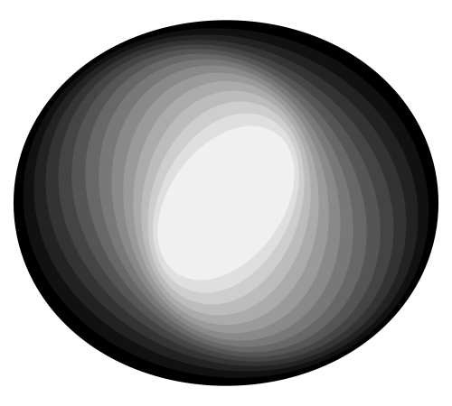
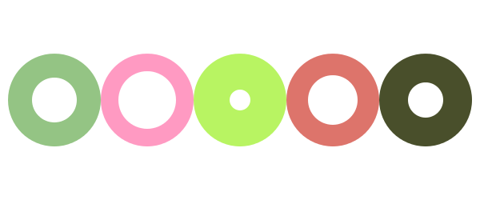
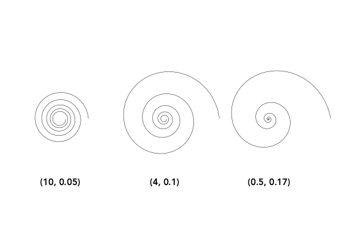
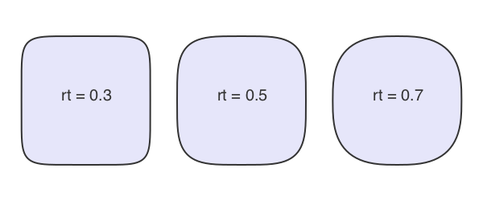
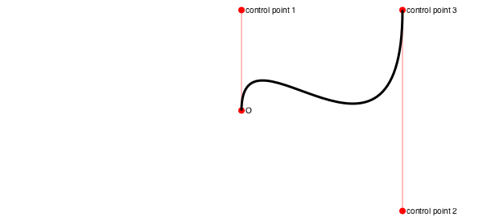
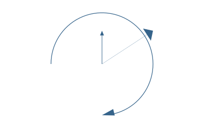
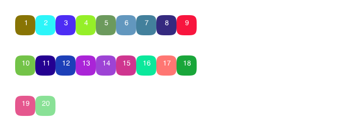

Simple graphics
In Luxor, there are different ways of working with graphical items. Some, such as lines, rectangles and circles, are drawn immediately (ie placed on the drawing and then "forgotten"). Others can be constructed and then converted to lists of points for further processing. For these, watch out for a vertices=true option.
Rectangles and boxes

Luxor.rect — Function.rect(xmin, ymin, w, h, action)Create a rectangle with one corner at (xmin/ymin) with width w and height h and then do an action.
See box() for more ways to do similar things, such as supplying two opposite corners, placing by centerpoint and dimensions.
rect(cornerpoint, w, h, action)Create a rectangle with one corner at cornerpoint with width w and height h and do an action.
Luxor.box — Function.box(cornerpoint1, cornerpoint2, action=:nothing)Create a rectangle between two points and do an action.
box(points::Array, action=:nothing)Create a box/rectangle using the first two points of an array of Points to defined opposite corners.
box(pt::Point, width, height, action=:nothing; vertices=false)Create a box/rectangle centered at point pt with width and height. Use vertices=true to return an array of the four corner points rather than draw the box.
box(x, y, width, height, action=:nothing)Create a box/rectangle centered at point x/y with width and height.
box(x, y, width, height, cornerradius, action=:nothing)Create a box/rectangle centered at point x/y with width and height. Round each corner by cornerradius.
Luxor.polybbox — Function.Find the bounding box of a polygon (array of points).
polybbox(pointlist::Array)Return the two opposite corners (suitable for box(), for example).
For regular polygons, see the next section on Polygons.
Circles and ellipses
There are various ways to make circles, including by center and radius, or passing through two points:
p1 = O
p2 = Point(100, 0)
sethue("red")
circle(p1, 40, :fill)
sethue("green")
circle(p1, p2, :stroke)
sethue("black")
arrow(O, Point(0, -40))
map(p -> circle(p, 4, :fill), [p1, p2])
Or passing through three points. The center3pts() function returns the center position and radius of a circle passing through three points:
sethue("black")
p1 = Point(0, -50)
p2 = Point(100, 0)
p3 = Point(0, 65)
map(p -> circle(p, 4, :fill), [p1, p2, p3])
circle(center3pts(p1, p2, p3)..., :stroke)
With ellipse() you can place ellipses (and circles) by defining the center point and the width and height.
tiles = Tiler(500, 300, 5, 5)
width = 20
height = 25
for (pos, n) in tiles
randomhue()
ellipse(pos, width, height, :fill)
sethue("black")
label = string(round(width/height, 2))
textcentered(label, pos.x, pos.y + 25)
width += 2
end
It's also possible to construct polygons that are approximations to ellipses with two focal points and a distance.
f1 = Point(-100, 0)
f2 = Point(100, 0)
ellipsepoly = ellipse(f1, f2, 170, :none, vertices=true)
[ begin
setgray(rescale(c, 150, 1, 0, 1))
poly(offsetpoly(ellipsepoly, c), close=true, :fill);
rotate(pi/20)
end
for c in 150:-10:1 ]
Luxor.circle — Function.circle(x, y, r, action=:nothing)Make a circle of radius r centered at x/y.
action is one of the actions applied by do_action, defaulting to :nothing. You can also use ellipse() to draw circles and place them by their centerpoint.
circle(pt, r, action)Make a circle centered at pt.
circle(pt1::Point, pt2::Point, action=:nothing)Make a circle that passes through two points that define the diameter:
Luxor.ellipse — Function.Make an ellipse, centered at xc/yc, fitting in a box of width w and height h.
ellipse(xc, yc, w, h, action=:none)Make an ellipse, centered at point c, with width w, and height h.
ellipse(cpt, w, h, action=:none)ellipse(focus1::Point, focus2::Point, k, action=:none;
stepvalue=pi/100,
vertices=false,
reversepath=false)Build a polygon approximation to an ellipse, given two points and a distance, k, which is the sum of the distances to the focii of any points on the ellipse (or the shortest length of string required to go from one focus to the perimeter and on to the other focus).
circlepath() constructs a circular path from Bèzier curves, which allows you to use circles as paths.
setline(4)
tiles = Tiler(600, 250, 1, 5)
for (pos, n) in tiles
randomhue()
circlepath(pos, tiles.tilewidth/2, :path)
newsubpath()
circlepath(pos, rand(5:tiles.tilewidth/2 - 1), :fill, reversepath=true)
end
Luxor.circlepath — Function.circlepath(center::Point, radius, action=:none;
reversepath=false,
kappa = 0.5522847)Draw a circle using Bézier curves.
More curved shapes: sectors, spirals, and squircles
A sector (technically an "annular sector") has an inner and outer radius, as well as start and end angles.
sethue("tomato")
sector(50, 90, pi/2, 0, :fill)
sethue("olive")
sector(Point(O.x + 200, O.y), 50, 90, 0, pi/2, :fill)You can also supply a value for a corner radius. The same sector is drawn but with rounded corners.
sethue("tomato")
sector(50, 90, pi/2, 0, 15, :fill)
sethue("olive")
sector(Point(O.x + 200, O.y), 50, 90, 0, pi/2, 15, :fill)
Luxor.sector — Function.sector(centerpoint::Point, innerradius, outerradius, startangle, endangle, action:none)Draw an annular sector centered at centerpoint.
Draw an annular sector centered at the origin.
sector(centerpoint::Point, innerradius, outerradius, startangle, endangle, cornerradius, action:none)Draw an annular sector with rounded corners, basically a bent sausage shape, centered at centerpoint.
TODO: The results aren't 100% accurate at the moment. There are small discontinuities where the curves join.
The cornerradius is reduced from the supplied value if neceesary to prevent overshoots.
Draw an annular sector with rounded corners, centered at the current origin.
A pie (or wedge) has start and end angles.
pie(0, 0, 100, pi/2, pi, :fill)
Luxor.pie — Function.pie(x, y, radius, startangle, endangle, action=:none)Draw a pie shape centered at x/y. Angles start at the positive x-axis and are measured clockwise.
pie(centerpoint, radius, startangle, endangle, action=:none)Draw a pie shape centered at centerpoint.
Angles start at the positive x-axis and are measured clockwise.
Draw a pie shape centered at the origin
To construct spirals, use the spiral() function. These can be drawn directly, or used as polygons. The default is to draw Archimedes (non-logarithmic) spirals.
sp = spiral(4, 1, stepby=pi/24, period=12pi, vertices=true)
for i in 1:10
setgray(i/10)
setline(22-2i)
poly(sp, :stroke)
end
Use the log=true option to draw logarithmic spirals.
sp = spiral(2, .12, log=true, stepby=pi/24, period=12pi, vertices=true)
for i in 1:10
setgray(i/10)
setline(22-2i)
poly(sp, :stroke)
end
Luxor.spiral — Function.spiral(a, b, action::Symbol=:none;
stepby = 0.01,
period = 4pi,
vertices = false,
log=false)Make a spiral. The two primary parameters a and b determine the start radius, and the tightness.
For linear spirals (log=false), b values are:
lituus: -2
hyperbolic spiral: -1
Archimedes' spiral: 1
Fermat's spiral: 2For logarithmic spirals (log=true):
golden spiral: b = ln(phi)/ (pi/2) (about 0.30)Values of b around 0.1 produce tighter, staircase-like spirals.
A squircle is a cross between a square and a circle. You can adjust the squariness and circularity of it to taste by supplying a value for keyword rt:
setline(2)
tiles = Tiler(600, 250, 1, 3)
for (pos, n) in tiles
sethue("lavender")
squircle(pos, 80, 80, rt=[0.3, 0.5, 0.7][n], :fillpreserve)
sethue("grey20")
strokepath()
textcentered("rt = $([0.3, 0.5, 0.7][n])", pos)
end
Luxor.squircle — Function.Make a squircle (basically a rectangle with rounded corners). Specify the center position, horizontal radius (distance from center to a side), and vertical radius (distance from center to top or bottom):
squircle(center::Point, hradius, vradius, action=:none; rt = 0.5, vertices=false)The rt option defaults to 0.5, and gives an intermediate shape. Values less than 0.5 make the shape more square. Values above make the shape more round.
To draw a simple rounded rectangle, supply a corner radius:
setline(4)
box(O, 200, 150, 10, :stroke)
Or you could smooth the corners of a box, like so:
setline(4)
polysmooth(box(O, 200, 150, vertices=true), 10, :stroke)
Paths and positions
A path is a sequence of lines and curves. You can add lines and curves to the current path, then use closepath() to join the last point to the first.
A path can have subpaths, created withnewsubpath(), which can form holes.
There is a 'current position' which you can set with move(), and can use implicitly in functions like line(), text(), arc() and curve().
Luxor.move — Function.move(x, y)
move(pt)Move to a point.
Luxor.rmove — Function.rmove(x, y)Move by an amount from the current point. Move relative to current position by x and y:
Move relative to current position by the pt's x and y:
rmove(pt)Luxor.newpath — Function.newpath()Create a new path. This is Cairo's new_path() function.
Luxor.newsubpath — Function.newsubpath()Add a new subpath to the current path. This is Cairo's new_sub_path() function. It can be used for example to make holes in shapes.
Luxor.closepath — Function.closepath()Close the current path. This is Cairo's close_path() function.
Lines
Use line() and rline() to draw straight lines.
Luxor.line — Function.line(x, y)
line(x, y, :action)
line(pt)Create a line from the current position to the x/y position and optionally apply an action:
line(pt1::Point, pt2::Point, action=:nothing)Make a line between two points, pt1 and pt2 and do an action.
Luxor.rline — Function.rline(x, y)
rline(x, y, :action)
rline(pt)Create a line relative to the current position to the x/y position and optionally apply an action:
You can use rule() to draw a line across the entire drawing through a point, at an angle to the current x-axis.
y = 10
for x in logspace(0, 2.75, 40)
circle(Point(x, y), 2, :fill)
rule(Point(x, y), -pi/2)
y += 2
end
Luxor.rule — Function.rule(pos::Point, theta=0.0)Draw a line across the entire drawing passing through pos, at an angle of theta to the x-axis. Returns the two points.
The end points are not calculated exactly, they're just a long way apart.
Arcs and curves
There are a few standard arc-drawing commands, such as curve(), arc(), carc(), and arc2r().
curve() constructs Bèzier curves from control points:
setline(.5)
pt1 = Point(0, -125)
pt2 = Point(200, 125)
pt3 = Point(200, -125)
sethue("red")
map(p -> circle(p, 4, :fill), [O, pt1, pt2, pt3])
line(O, pt1, :stroke)
line(pt2, pt3, :stroke)
sethue("black")
setline(3)
move(O)
curve(pt1, pt2, pt3)
strokepath()
arc2r() draws a circular arc that joins two points:
tiles = Tiler(700, 200, 1, 6)
for (pos, n) in tiles
c1, pt2, pt3 = ngon(pos, rand(10:50), 3, rand(0:pi/12:2pi), vertices=true)
sethue("black")
map(pt -> circle(pt, 4, :fill), [c1, pt3])
sethue("red")
circle(pt2, 4, :fill)
randomhue()
arc2r(c1, pt2, pt3, :stroke)
end
Luxor.arc — Function.Add an arc to the current path from angle1 to angle2 going clockwise.
arc(xc, yc, radius, angle1, angle2, action=:nothing)Angles are defined relative to the x-axis, positive clockwise.
Arc with centerpoint.
arc(centerpoint::Point, radius, angle1, angle2, action=:nothing)Luxor.arc2r — Function. arc2r(c1::Point, p2::Point, p3::Point, action=:nothing)Make a circular arc centered at c1 that starts at p2 and ends at p3, going clockwise.
c1-p2 really determines the radius. If p3 doesn't lie on the circular path, it will be used only as an indication of the arc's length, rather than its position.
Luxor.carc — Function.Add an arc to the current path from angle1 to angle2 going counterclockwise.
carc(xc, yc, radius, angle1, angle2, action=:nothing)Angles are defined relative to the x-axis, positive clockwise.
Add an arc centered at centerpoint to the current path from angle1 to angle2 going counterclockwise.
Luxor.carc2r — Function.carc2r(c1::Point, p2::Point, p3::Point, action=:nothing)Make a circular arc centered at c1 that starts at p2 and ends at p3, going counterclockwise.
c1-p2 really determines the radius. If p3 doesn't lie on the circular path, it will be used only as an indication of the arc's length, rather than its position.
Luxor.curve — Function.Add a Bézier curve.
curve(x1, y1, x2, y2, x3, y3)
curve(p1, p2, p3)The spline starts at the current position, finishing at x3/y3 (p3), following two control points x1/y1 (p1) and x2/y2 (p2)
Geometry tools
You can find the midpoint between two points using midpoint().
The following code places a small pentagon (using ngon()) at the midpoint of each side of a larger pentagon:
sethue("red")
ngon(O, 100, 5, 0, :stroke)
sethue("darkgreen")
p5 = ngon(O, 100, 5, 0, vertices=true)
for i in eachindex(p5)
pt1 = p5[mod1(i, 5)]
pt2 = p5[mod1(i + 1, 5)]
ngon(midpoint(pt1, pt2), 20, 5, 0, :fill)
endA more general function, between(), finds for a value x between 0 and 1 the corresponding point on a line defined by two points. So midpoint(p1, p2) and between(p1, p2, 0.5) should return the same point.
sethue("red")
p1 = Point(-150, 0)
p2 = Point(150, 40)
line(p1, p2)
strokepath()
for i in -0.5:0.1:1.5
randomhue()
circle(between(p1, p2, i), 5, :fill)
end
Values less than 0.0 and greater than 1.0 appear to work well too, placing the point on the line if extended.
Luxor.midpoint — Function.midpoint(p1, p2)Find the midpoint between two points.
midpoint(a)Find midpoint between the first two elements of an array of points.
Luxor.between — Function.between(p1::Point, p2::Point, x)
between((p1::Point, p2::Point), x)Find the point between point p1 and point p2 for x, where x is typically between 0 and 1, so these two should be equivalent:
between(p1, p2, 0.5)and
midpoint(p1, p2)center3pts() finds the radius and center point of a circle passing through three points which you can then use with functions such as circle() or arc2r().
Luxor.center3pts — Function.center3pts(a::Point, b::Point, c::Point)Find the radius and center point for three points lying on a circle.
returns (centerpoint, radius) of a circle. Then you can use circle() to place a circle, or arc() to draw an arc passing through those points.
If there's no such circle, then you'll see an error message in the console and the function returns (Point(0,0), 0).
intersection() finds the intersection of two lines.
pt1, pt2, pt3, pt4 = ngon(O, 100, 5, vertices=true)
line(pt1, pt2, :stroke)
line(pt3, pt4, :stroke)
flag, ip = intersection(pt1, pt2, pt3, pt4)
if flag
circle(ip, 5, :fill)
end
intersection_line_circle() finds the intersection of a line and a circle. There can be 0, 1, or 2 intersection points.
l1 = Point(-100.0, -75.0)
l2 = Point(300.0, 100.0)
rad = 100
cpoint = Point(0, 0)
line(l1, l2, :stroke)
circle(cpoint, rad, :stroke)
nints, ip1, ip2 = intersection_line_circle(l1, l2, cpoint, rad)
sethue("black")
if nints == 2
circle(ip1, 8, :stroke)
circle(ip2, 8, :stroke)
end
Luxor.intersection — Function.intersection(p1::Point, p2::Point, p3::Point, p4::Point)Find intersection of two lines p1-p2 and p3-p4
This returns a tuple: (boolean, point(x, y)).
Keyword options and default values:
crossingonly = falsereturns (true, Point(x, y)) if the lines intersect somewhere. If crossingonly = true, returns (false, intersectionpoint) if the lines don't cross, but would intersect at intersectionpoint if continued beyond their current endpoints.
commonendpoints = falseIf commonendpoints= true, will return (false, Point(0, 0)) if the lines share a common end point (because that's not so much an intersection, more a meeting).
Function returns (false, Point(0, 0)) if the lines are undefined,
Luxor.intersection_line_circle — Function.intersection_line_circle(p1::Point, p2::Point, cpoint::Point, r)Find the intersection points of a line (extended through points p1 and p2) and a circle.
Return a tuple of (n, pt1, pt2)
where
nis the number of intersections,0,1, or2pt1is first intersection point, orPoint(0, 0)if nonept2is the second intersection point, orPoint(0, 0)if none
The calculated intersection points wont necessarily lie on the line segment between p1 and p2.
getnearestpointonline() finds perpendiculars.
end1, end2, pt3 = ngon(O, 100, 3, vertices=true)
map(pt -> circle(pt, 5, :fill), [end1, end2, pt3])
line(end1, end2, :stroke)
arrow(pt3, getnearestpointonline(end1, end2, pt3))
Luxor.getnearestpointonline — Function.getnearestpointonline(pt1::Point, pt2::Point, startpt::Point)Given a line from pt1 to pt2, and startpt is the start of a perpendicular heading to meet the line, at what point does it hit the line?
Luxor.pointlinedistance — Function.pointlinedistance(p::Point, a::Point, b::Point)Find the distance between a point p and a line between two points a and b.
Luxor.slope — Function.slope(pointA::Point, pointB::Point)Find angle of a line starting at pointA and ending at pointB.
Return a value between 0 and 2pi. Value will be relative to the current axes.
slope(O, Point(0, 100)) |> rad2deg # y is positive down the page
90.0
slope(Point(0, 100), O) |> rad2deg
270.0Luxor.perpendicular — Function.perpendicular(p::Point)Returns point Point(p.y, -p.x).
Luxor.@polar — Macro.@polar (p)Convert a tuple of two numbers to a Point of x, y Cartesian coordinates.
@polar (10, pi/4)
@polar [10, pi/4]produces
Luxor.Point(7.0710678118654755,7.071067811865475)Luxor.polar — Function.polar(r, theta)Convert point in polar form (radius and angle) to a Point.
polar(10, pi/4) 09:19:38 v5 srcproduces
Luxor.Point(7.071067811865475,7.0710678118654755)Arrows
You can draw lines or arcs with arrows at the end with arrow(). For straight arrows, supply the start and end points. For arrows as circular arcs, you provide center, radius, and start and finish angles. You can optionally provide dimensions for the arrowheadlength and arrowheadangle of the tip of the arrow (angle in radians between side and center). The default line weight is 1.0, equivalent to setline(1)), but you can specify another.
arrow(O, Point(0, -65))
arrow(O, Point(100, -65), arrowheadlength=20, arrowheadangle=pi/4, linewidth=.3)
arrow(O, 100, pi, pi/2, arrowheadlength=25, arrowheadangle=pi/12, linewidth=1.25)
Luxor.arrow — Function.arrow(startpoint::Point, endpoint::Point;
linewidth = 1.0,
arrowheadlength = 10,
arrowheadangle = pi/8)Draw a line between two points and add an arrowhead at the end. The arrowhead length will be the length of the side of the arrow's head, and the arrowhead angle is the angle between the sloping side of the arrowhead and the arrow's shaft.
Arrows don't use the current linewidth setting (setline()), and defaults to 1, but you can specify another value. It doesn't need stroking/filling, the shaft is stroked and the head filled with the current color.
arrow(centerpos::Point, radius, startangle, endangle;
linewidth = 1.0,
arrowheadlength = 10,
arrowheadangle = pi/8)Draw a curved arrow, an arc centered at centerpos starting at startangle and ending at endangle with an arrowhead at the end. Angles are measured clockwise from the positive x-axis.
Arrows don't use the current linewidth setting (setline()); you can specify the linewidth.
Julia graphics
A couple of functions in Luxor provide you with instant access to the Julia logo, and the three colored circles:
for (pos, n) in Tiler(750, 250, 1, 2)
gsave()
translate(pos - Point(150, 100))
if n == 1
julialogo()
elseif n == 2
julialogo(action=:clip)
for i in 1:500
gsave()
translate(rand(0:400), rand(0:250))
juliacircles(10)
grestore()
end
clipreset()
end
grestore()
end
Luxor.julialogo — Function.julialogo(;action=:fill, color=true)Draw the Julia logo. The default action is to fill the logo and use the colors:
julialogo()If color is false, the logo will use the current color, and the dots won't be colored in the usual way.
The logo's dimensions are about 330 wide and 240 high, and the 0/0 point is at the bottom left corner. To place the logo by locating its center, do this:
gsave()
translate(-165, -120)
julialogo() # locate center at 0/0
grestore()To use the logo as a clipping mask:
julialogo(action=:clip)(In this case the color setting is automatically ignored.)
Luxor.juliacircles — Function.juliacircles(radius=100)Draw the three Julia circles in color centered at the origin.
The distance of the centers of the circles from the origin is radius. The optional keyword arguments outercircleratio (default 0.75) and innercircleratio (default 0.65) control the radius of the individual colored circles relative to the radius. So you can get relatively smaller or larger circles by adjusting the ratios.
Miscellaneous
Hypotrochoids
hypotrochoid() makes hypotrochoids. The result is a polygon. You can either draw it directly, or pass it on for further polygon fun, as here, which uses offsetpoly() to trace round it a few times.
origin()
background("grey15")
sethue("antiquewhite")
setline(1)
p = hypotrochoid(100, 25, 55, :stroke, stepby=0.01, vertices=true)
for i in 0:3:15
poly(offsetpoly(p, i), :stroke, close=true)
endThere's a matching epitrochoid() function.
Luxor.hypotrochoid — Function.hypotrochoid(R, r, d, action=:none;
stepby=0.01,
period=0,
vertices=false)Make a hypotrochoid with short line segments. (Like a Spirograph.) The curve is traced by a point attached to a circle of radius r rolling around the inside of a fixed circle of radius R, where the point is a distance d from the center of the interior circle. Things get interesting if you supply non-integral values.
Special cases include the hypocycloid, if d = r, and an ellipse, if R = 2r.
stepby, the angular step value, controls the amount of detail, ie the smoothness of the polygon,
If period is not supplied, or 0, the lowest period is calculated for you.
The function can return a polygon (a list of points), or draw the points directly using the supplied action. If the points are drawn, the function returns a tuple showing how many points were drawn and what the period was (as a multiple of pi).
Luxor.epitrochoid — Function.epitrochoid(R, r, d, action=:none;
stepby=0.01,
period=0,
vertices=false)Make a epitrochoid with short line segments. (Like a Spirograph.) The curve is traced by a point attached to a circle of radius r rolling around the outside of a fixed circle of radius R, where the point is a distance d from the center of the circle. Things get interesting if you supply non-integral values.
stepby, the angular step value, controls the amount of detail, ie the smoothness of the polygon.
If period is not supplied, or 0, the lowest period is calculated for you.
The function can return a polygon (a list of points), or draw the points directly using the supplied action. If the points are drawn, the function returns a tuple showing how many points were drawn and what the period was (as a multiple of pi).
Grids
If you have to position items regularly, you might find a use for a grid. Luxor provides a simple grid utility. Grids are lazy: they'll supply the next point on the grid when you ask for it.
Define a rectangular grid with GridRect, and a hexagonal grid with GridHex. Get the next grid point from a grid with nextgridpoint(grid).
grid = GridRect(O, 40, 80, (10 - 1) * 40)
for i in 1:20
randomhue()
p = nextgridpoint(grid)
squircle(p, 20, 20, :fill)
sethue("white")
text(string(i), p, halign=:center)
end
radius = 70
grid = GridHex(O, radius, 600)
arrow(O, Point(O.x + (sqrt(3) * radius)/2, 0))
for i in 1:15
randomhue()
p = nextgridpoint(grid)
ngon(p, radius-5, 6, pi/2, :fillstroke)
sethue("white")
text(string(i), p, halign=:center)
end
Luxor.GridRect — Type.GridRect(startpoint, xspacing, yspacing, width, height)Define a rectangular grid, to start at startpoint and proceed along the x-axis in steps of xspacing, then along the y-axis in steps of yspacing.
GridRect(startpoint, xspacing=100.0, yspacing=100.0, width=1200.0, height=1200.0)For a column, set the xspacing to 0:
grid = GridRect(O, 0, 40)To get points from the grid, use nextgridpoint(g::Grid).
julia> grid = GridRect(O, 0, 40);
julia> nextgridpoint(grid)
Luxor.Point(0.0,0.0)
julia> nextgridpoint(grid)
Luxor.Point(0.0,40.0)When you run out of grid points, you'll wrap round and start again.
Luxor.GridHex — Type.GridHex(startpoint, radius, width=1200.0, height=1200.0)Define a hexagonal grid, to start at startpoint and proceed along the x-axis and then along the y-axis, radius is the radius of a circle that encloses each hexagon. The distance in x between the centers of successive hexagons is:
To get the next point from the grid, use nextgridpoint(g::Grid).
When you run out of grid points, you'll wrap round and start again.
Luxor.nextgridpoint — Function.nextgridpoint(g::GridRect)Returns the next available (or even the first) grid point of a grid.
nextgridpoint(g::GridHex)Returns the next available grid point of a hexagonal grid.
Cropmarks
If you want cropmarks (aka trim marks), use the cropmarks() function, supplying the centerpoint, followed by the width and height:
cropmarks(O, 1200, 1600)
cropmarks(O, paper_sizes["A0"]...)sethue("red")
box(O, 150, 150, :stroke)
cropmarks(O, 150, 150)
Luxor.cropmarks — Function.cropmarks(center, width, height)Draw cropmarks (also known as trim marks).